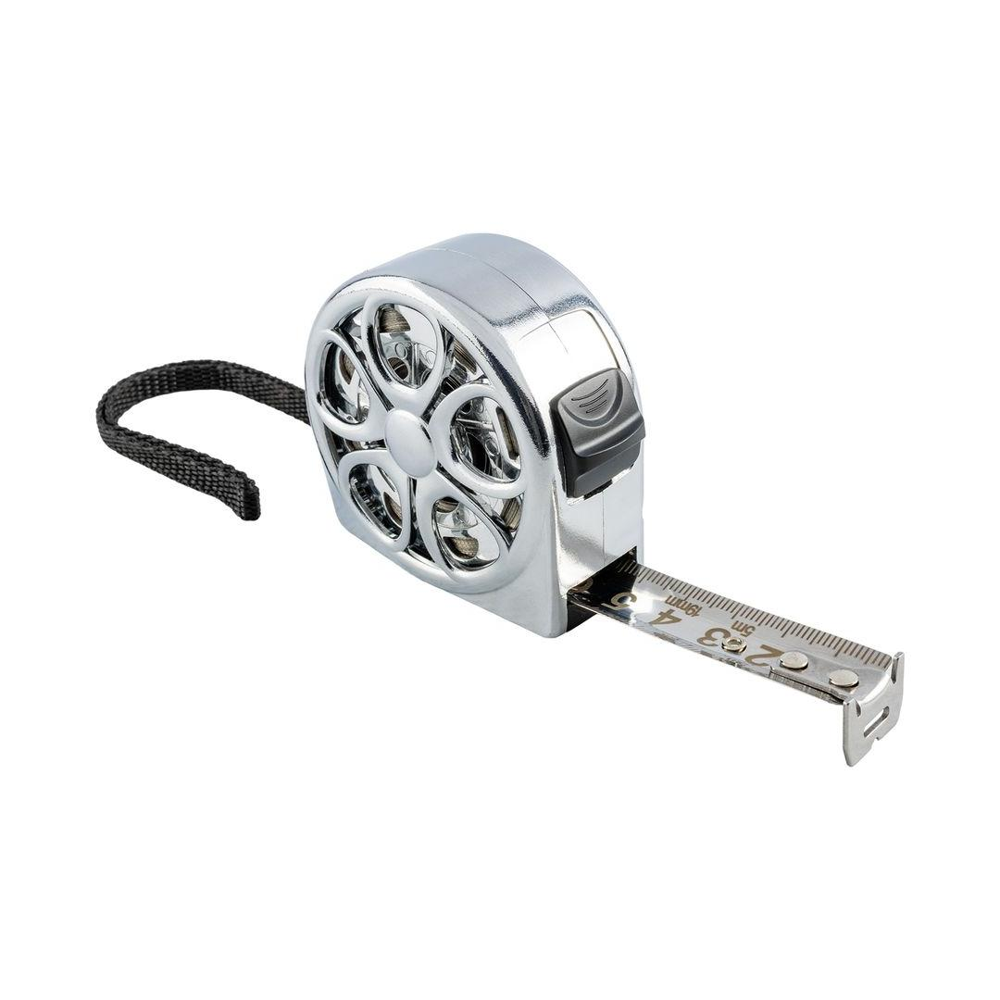

ME07519

Blade thickness: 0.11mm
Blade width: 19mm
Total length: 5m
Classification: Contractor (Green)
This professional-grade measuring tape is designed for durability and precision in any working condition. It features a generous 5-meter (16-foot) length and a 19mm-wide blade, providing ample reach and clear markings for accurate measurements across a variety of tasks.
The core of this tape is its exceptional construction. It utilizes a stainless steel (S/Steel) blade, which is inherently rust-resistant and built to withstand rigorous, long-term use. This robust material ensures the markings remain legible and the blade maintains its integrity even in harsh environments.
Crucially, the entire unit is waterproof, making it an indispensable tool for plumbers, marine applications, construction sites, or any project where exposure to moisture or liquids is a concern. The combination of the stainless steel blade and the waterproof design guarantees longevity and consistent performance, project after project. The robust casing is engineered for a comfortable, non-slip grip, ensuring reliable operation every time.
Application: